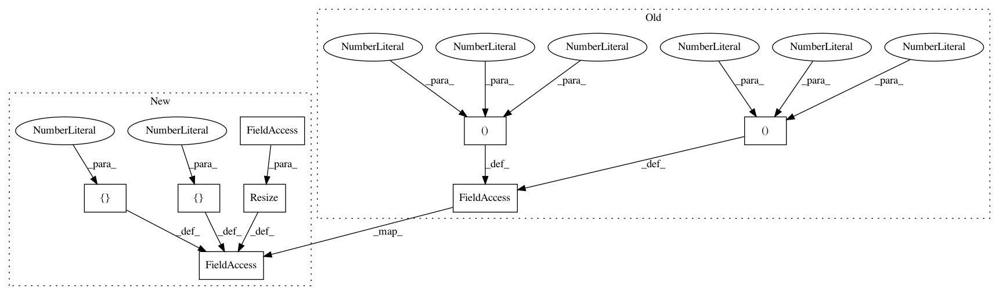

c5d6be170013db8975d96806084df573d87e5d26,implementations/wgan_div/wgan_div.py,,,#,86
Before Change
"../../data/mnist",
train=True,
download=True,
transform=transforms.Compose([transforms.ToTensor(), transforms.Normalize((0.5, 0.5, 0.5), (0.5, 0.5, 0.5))]),
),
batch_size=opt.batch_size,
shuffle=True,
)
// Optimizers
optimizer_G = torch.optim.Adam(generator.parameters(), lr=opt.lr, betas=(opt.b1, opt.b2))
optimizer_D = torch.optim.Adam(discriminator.parameters(), lr=opt.lr, betas=(opt.b1, opt.b2))
Tensor = torch.cuda.FloatTensor if cuda else torch.FloatTensor
// ----------
// Training
// ----------
batches_done = 0
for epoch in range(opt.n_epochs):
for i, (imgs, _) in enumerate(dataloader):
// Configure input
real_imgs = Variable(imgs.type(Tensor),requires_grad=True)
// ---------------------
// Train Discriminator
// ---------------------
optimizer_D.zero_grad()
// Sample noise as generator input
z = Variable(Tensor(np.random.normal(0, 1, (imgs.shape[0], opt.latent_dim))))
// Generate a batch of images
fake_imgs = generator(z)
// Real images
real_validity = discriminator(real_imgs)
// Fake images
fake_validity = discriminator(fake_imgs)
// Compute W-div gradient penalty
real_grad_out = Variable(Tensor(real_imgs.size(0), 1).fill_(1.0),requires_grad=False)
real_grad = autograd.grad(real_validity,
real_imgs,
real_grad_out,
create_graph=True,
retain_graph=True,
only_inputs=True)[0]
real_grad_norm = real_grad.view(real_grad.size(0),-1).pow(2).sum(1)**(p/2)
fake_grad_out = Variable(Tensor(fake_imgs.size(0), 1).fill_(1.0),requires_grad=False)
fake_grad = autograd.grad(fake_validity,
fake_imgs,
fake_grad_out,
create_graph=True,
retain_graph=True,
only_inputs=True)[0]
fake_grad_norm = fake_grad.view(fake_grad.size(0),-1).pow(2).sum(1)**(p/2)
div_gp = torch.mean(real_grad_norm + fake_grad_norm) * k / 2
After Change
train=True,
download=True,
transform=transforms.Compose(
[transforms.Resize(opt.img_size), transforms.ToTensor(), transforms.Normalize([0.5], [0.5])]
),
),
batch_size=opt.batch_size,
shuffle=True,
)
// Optimizers
optimizer_G = torch.optim.Adam(generator.parameters(), lr=opt.lr, betas=(opt.b1, opt.b2))
optimizer_D = torch.optim.Adam(discriminator.parameters(), lr=opt.lr, betas=(opt.b1, opt.b2))
Tensor = torch.cuda.FloatTensor if cuda else torch.FloatTensor
// ----------
// Training
// ----------
batches_done = 0
for epoch in range(opt.n_epochs):
for i, (imgs, _) in enumerate(dataloader):
// Configure input
real_imgs = Variable(imgs.type(Tensor), requires_grad=True)
// ---------------------
// Train Discriminator
// ---------------------
optimizer_D.zero_grad()
// Sample noise as generator input
z = Variable(Tensor(np.random.normal(0, 1, (imgs.shape[0], opt.latent_dim))))
// Generate a batch of images
fake_imgs = generator(z)
// Real images
real_validity = discriminator(real_imgs)
// Fake images
fake_validity = discriminator(fake_imgs)
// Compute W-div gradient penalty
real_grad_out = Variable(Tensor(real_imgs.size(0), 1).fill_(1.0), requires_grad=False)
real_grad = autograd.grad(
real_validity, real_imgs, real_grad_out, create_graph=True, retain_graph=True, only_inputs=True
)[0]
real_grad_norm = real_grad.view(real_grad.size(0), -1).pow(2).sum(1) ** (p / 2)
fake_grad_out = Variable(Tensor(fake_imgs.size(0), 1).fill_(1.0), requires_grad=False)
fake_grad = autograd.grad(
fake_validity, fake_imgs, fake_grad_out, create_graph=True, retain_graph=True, only_inputs=True
)[0]
fake_grad_norm = fake_grad.view(fake_grad.size(0), -1).pow(2).sum(1) ** (p / 2)
div_gp = torch.mean(real_grad_norm + fake_grad_norm) * k / 2
In pattern: SUPERPATTERN
Frequency: 4
Non-data size: 8
Instances
Project Name: eriklindernoren/PyTorch-GAN
Commit Name: c5d6be170013db8975d96806084df573d87e5d26
Time: 2019-03-28
Author: eriklindernoren@live.se
File Name: implementations/wgan_div/wgan_div.py
Class Name:
Method Name:
Project Name: eriklindernoren/PyTorch-GAN
Commit Name: c5d6be170013db8975d96806084df573d87e5d26
Time: 2019-03-28
Author: eriklindernoren@live.se
File Name: implementations/softmax_gan/softmax_gan.py
Class Name:
Method Name:
Project Name: eriklindernoren/PyTorch-GAN
Commit Name: c5d6be170013db8975d96806084df573d87e5d26
Time: 2019-03-28
Author: eriklindernoren@live.se
File Name: implementations/gan/gan.py
Class Name:
Method Name:
Project Name: eriklindernoren/PyTorch-GAN
Commit Name: c5d6be170013db8975d96806084df573d87e5d26
Time: 2019-03-28
Author: eriklindernoren@live.se
File Name: implementations/wgan_gp/wgan_gp.py
Class Name:
Method Name: